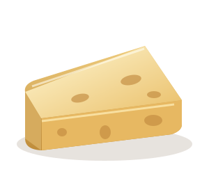

Queso fresco
Textura suave y sabor delicado. Perfecto para acompañar panes, ensaladas y desayunos.
S/ 18.00

Presentación: 500 g
S/ 25.00Una textura firme y un sabor más intenso, ideal para tablas de quesos, meriendas y recetas que buscan un poco más de carácter.
Demo: el producto se agrega a un carrito guardado en este navegador. No se realizan cobros.
Una textura firme y un sabor más intenso para tablas de quesos y meriendas. Información referencial pendiente de validación comercial.
Las condiciones de entrega, almacenamiento y conservación están por confirmar con el cliente.
Esta ficha forma parte de una maqueta visual. Precios, presentaciones y textos son datos de ejemplo.
Textura suave y sabor delicado. Perfecto para acompañar panes, ensaladas y desayunos.
Una presentación generosa para compartir en casa y preparar tus platos favoritos.